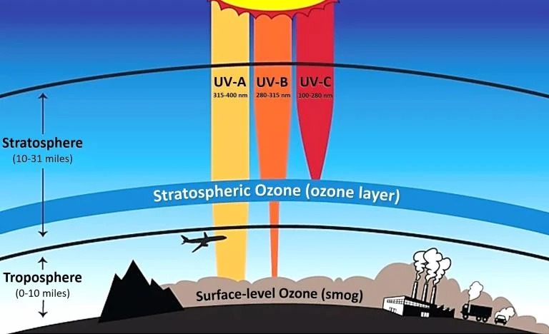
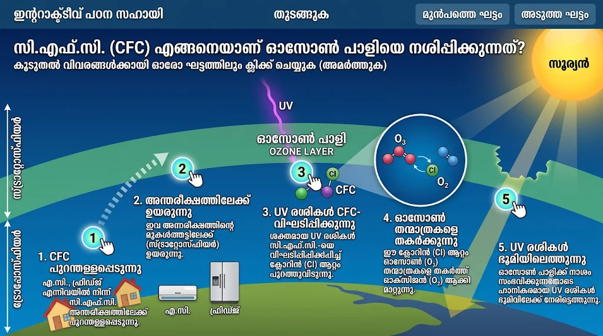
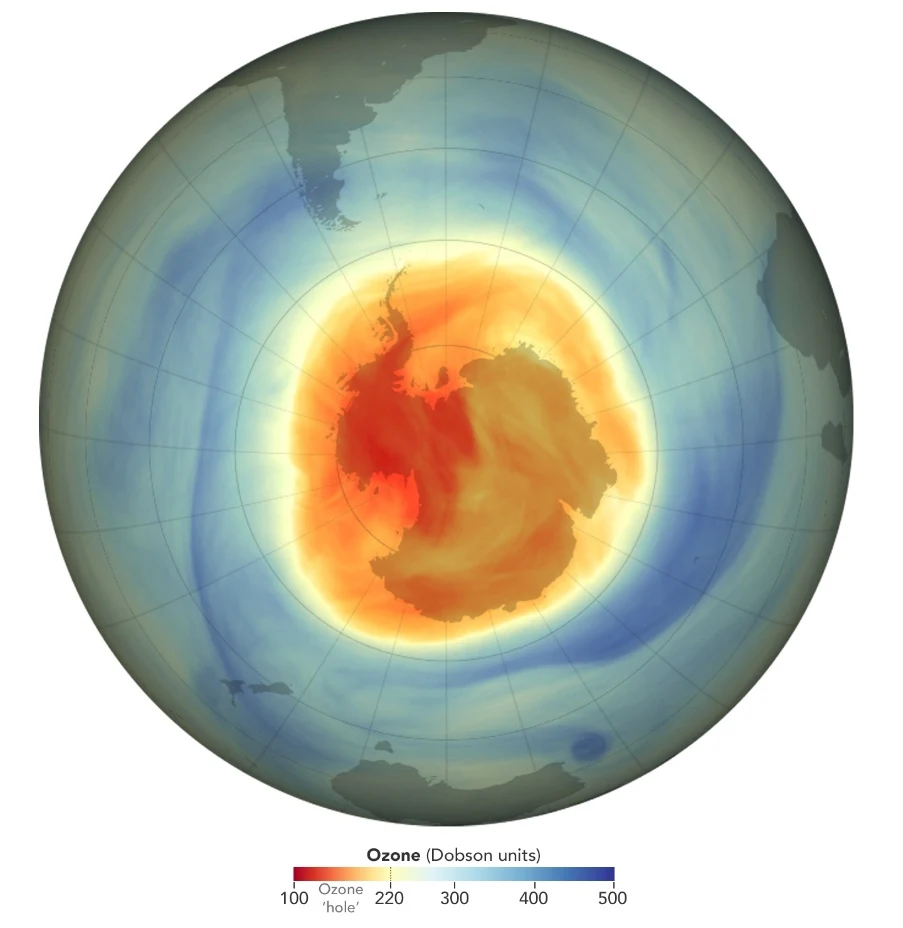
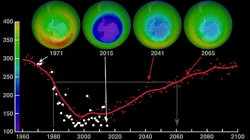

20-ാം നൂറ്റാണ്ടിന്റെ അവസാനത്തിൽ ലോകമെമ്പാടുമുള്ള പത്രമാധ്യമങ്ങൾ വലിയ പ്രാധാന്യത്തോടെ റിപ്പോർട്ട് ചെയ്തതും ആശങ്കയോടെ ചർച്ച ചെയ്തതുമായ ഒരു മഹാവിപത്തായിരുന്നു അന്റാർട്ടിക്കയുടെ മുകളിലെ ഓസോൺ പാളിയിൽ കണ്ടെത്തിയ വിള്ളൽ അഥവാ “ഓസോൺ പാളിയിലെ തുള”. നമ്മുടെ വീടുകളിലെ റഫ്രിജറേറ്ററുകളിലും എയർകണ്ടീഷണറുകളിലും ഉപയോഗിച്ചിരുന്ന ക്ലോറോഫ്ലൂറോകാർബൺ (CFC) വാതകങ്ങളാണ് ഈ നാശത്തിന് പ്രധാന കാരണം എന്ന് അന്നുതന്നെ തിരിച്ചറിഞ്ഞിരുന്നു. ഈ പ്രവണത തുടർന്നാൽ സൂര്യനിൽനിന്നുള്ള ഹാനികരമായ അൾട്രാവയലറ്റ് (UV) കിരണങ്ങൾ വൻതോതിൽ ഭൂമിയിലെത്തുമെന്നും അത് ജീവജാലങ്ങൾക്ക് ഗുരുതരമായ ദോഷം വരുത്തുകയും ചെയ്യുമെന്ന് ലോകം ഭയപ്പെട്ടു. എന്നാൽ ഇന്ന്, 21-ാം നൂറ്റാണ്ടിന്റെ ആദ്യ പാദം പിന്നിട്ടിരിക്കുന്ന ഈ വേളയിൽ ഒരിക്കൽ നമ്മെ ആശങ്കയിലാഴ്ത്തിയിരുന്ന ഈ വിഷയം മുൻപത്തെപോലെ സജീവമായി ഇപ്പോൾ ചർച്ച ചെയ്യപെടുന്നില്ല. അതിന് പിന്നിലെ കാരണം എന്താണ്? ഓസോൺ പാളിയിലെ ആ വലിയ തുളക്കു പിന്നീട് എന്ത് സംഭവിച്ചു? ഈ ചോദ്യങ്ങൾക്ക് ഒരു ചുരുക്ക വിശദീകരണം നൽകാനുള്ള ശ്രമമാണ് ഈ ലേഖനം. അതിലേക്ക് പോകുന്നതിനു മുമ്പ് ഒരുകാലത്തു ലോകത്തെ വിറപ്പിച്ച CFC എന്ന “വില്ലൻ” കഥാപാത്രത്തെ കുറിച്ച് ആദ്യം മനസിലാക്കാം.

19-ാം നൂറ്റാണ്ടിന്റെ അവസാനത്തിലും 20-ാം നൂറ്റാണ്ടിന്റെ തുടക്കത്തിലും വീടുകളിലും മറ്റും ഉപയോഗിക്കുന്ന റെഫ്രിജേറ്ററുകളിൽ ഇന്നത്തെ പോലെ സുരക്ഷിതമായ റഫ്രിജന്റുകൾ (refrigerants, തണുപ്പിക്കാൻ ഉപയോഗിക്കുന്ന വാതകങ്ങൾ) ലഭ്യമായിരുന്നില്ല. അതിനാൽ തന്നെ അന്നു അവയിൽ അമോണിയ, മീഥയിൽ ക്ലോറൈഡ്, സൾഫർ ഡയോക്സൈഡ് തുടങ്ങിയ വിഷവാതകങ്ങളാണ് ഉപയോഗിച്ചിരുന്നത്. എന്നാൽ വാതക ചോർച്ചകൾ പോലുള്ള അപകടങ്ങൾ 1920-കളോടെ നിരവധി ആളുകളുടെ മരണങ്ങൾക്കു കാരണമായി. ഈ ഗുരുതര സാഹചര്യത്തിൽ, അമേരിക്കയിലെ മൂന്ന് വലിയ കമ്പനികളായ ഫ്രിജിഡയർ (Frigidaire), ജനറൽ മോട്ടോഴ്സ് (General Motors), ഡ്യൂപോണ്ട് (DuPont) എന്നിവർ ഒന്നിച്ച് ചേർന്ന് കൂടുതൽ സുരക്ഷിതമായ ഒരു കൂളിംഗ് ഏജന്റ് കണ്ടെത്താൻ ഗവേഷണം ആരംഭിച്ചു. അതിന്റെ ഫലമായി 1928-ൽ ജനറൽ മോട്ടോഴ്സിലെ ശാസ്ത്രജ്ഞനായ തോമസ് മിഡ്ഗ്ലി ജൂനിയർ (Thomas Midgley Jr.) കാർബൺ, ഫ്ലൂറിൻ, ക്ലോറിൻ എന്നിവ ചേർന്നുള്ള ഒരു പുതിയ രാസവസ്തു കണ്ടെത്തി അതാണ് ക്ലോറോഫ്ലൂറോകാർബൺ (CFC)1. ഈ വാതകങ്ങൾ അന്തരീക്ഷ വായുവിൽ നിഷ്ക്രിയവും സുരക്ഷിതവുമായതിനാൽ തന്നെ ഇതിന്റെ ഉപയോഗം അന്ന് വൻ പ്രചാരം നേടുകയും രണ്ടാം ലോകമഹായുദ്ധത്തിനു ശേഷം CFCയുടെ ഉപയോഗം റെഫ്രിജേറ്ററുകളിലും എയർ കണ്ടീഷണറുകളിലും മാത്രമായി ഒതുങ്ങാതെ അത് ഏറോസോൾ സ്പ്രേകൾ, ആരോഗ്യ ഉൽപ്പന്നങ്ങൾ, വ്യാവസായിക ഉപകരണങ്ങൾ തുടങ്ങിയ പല മേഖലകളിലേക്കും വ്യാപിക്കുകയും ചെയ്തു. അങ്ങനെ 1950-60 കാലഘട്ടത്തിൽ CFC കുറഞ്ഞ ചെലവിൽ നിർമ്മിക്കാവുന്ന, വളരെ ഫലപ്രദമായ കൂളിംഗ് ഏജന്റായി മാറി. പരിസ്ഥിതിക്ക് യാതൊരു നാശവും ഉണ്ടാക്കാത്തതിനാൽ അമേരിക്കയിലെ പൊതുജനാരോഗ്യ നിയമങ്ങൾ പല നഗരങ്ങളിലെയും പൊതുകെട്ടിടങ്ങളിലേയും കൂളന്റായി CFCയുടെ ഒരു വകഭേദമായ ഫ്രിയോൺ-12 (Freon-12 / CFC-12) ഉപയോഗിക്കാൻ നിഷ്കർഷിക്കുകയുംചെയ്തു. അതിലൂടെയൊക്കെ അതിന്റെ ഉൽപ്പാദനം അതിവേഗം ഉയർന്ന് ലക്ഷകണക്കിന് ടൺ ആകുകയും അവ നിർമിക്കുന്ന വലിയ കമ്പനികളുടെ ലാഭകരമായ ബിസിനസ് ആയി മാറുകയും ചെയ്തു.

CFCയെക്കുറിച്ച് അന്നുണ്ടായിരുന്ന ധാരണ ഒരു പരിധിവരെ ശരിയായിരുന്നു. നമ്മൾ ജീവിക്കുന്നതും ഭൗമോപരിതലത്തോട് ചേർന്നതുമായ ട്രോപോസ്ഫിയറിൽ (Troposphere, ഭൂമിയുടെ ഉപരിതലത്തിൽ നിന്ന് ധ്രുവപ്രദേശത്തു ഏകദേശം 8 Km വരെയും ഭൂമധ്യരേഖയിൽ ഏകദേശം 18 Km വരെയും ഉയരത്തിൽ സ്ഥിതി ചെയ്യുന്ന അന്തരീക്ഷപാളിയാണ് ഇത്) ഇവ രാസപരമായി നിഷ്ക്രിയ വാതകങ്ങളാണ്. അതായത്, ഈ പാളിയിൽ ഇവ മറ്റ് വാതകങ്ങളുമായോ അന്തരീക്ഷ ഘടകങ്ങളുമായോ പ്രധാനപ്പെട്ട രാസപ്രവർത്തനങ്ങളിൽ ഏർപ്പെടുന്നില്ല എന്നർത്ഥം. അതിനാൽ മഴയോ മറ്റ് പ്രകൃതിദത്ത സംഭവങ്ങളോ ഉണ്ടായാൽ പോലും വെള്ളത്തിൽ ലയിക്കുകയോ നശിക്കുകയോ ചെയ്യാതെ 50 മുതൽ 150 വർഷം വരെ അന്തരീക്ഷത്തിൽ അങ്ങനെ തന്നെ നിലനിൽക്കാൻ ഇവക്കു കഴിയും. എന്നാൽ ഇതിന്റെ ഈ സ്ഥിരത തന്നെയാണ് പിന്നീട് വലിയ പ്രശ്നമായി മാറിയത്. 1974-ൽ അമേരിക്കയിലെ യൂണിവേഴ്സിറ്റി ഓഫ് കാലിഫോർണിയയിലെ രസതന്ത്രജ്ഞരായ ഡോ. മാരിയോ മൊലീനയും പ്രൊഫസർ എഫ്. ഷെർവുഡ് റൗളൻഡും നടത്തിയ പഠനങ്ങളാണ് ഈ അപകടം ആദ്യമായി കണ്ടെത്തിയത്2. അവരുടെ കണ്ടെത്തലുകൾ പ്രകാരം, ദീർഘകാലം അന്തരീക്ഷത്തിൽ നിലനിൽക്കുന്ന CFCകൾ പതുക്കെ മുകളിലേക്ക് ഉയർന്ന് നമ്മുടെ ട്രോപോസ്റഫറിന്റെ തൊട്ടുമുകളിലുള്ള അന്തരീക്ഷ പാളിയായ സ്ട്രാറ്റോസ്ഫിയറിലെത്തുന്നു (Stratosphere). ഈ സ്ട്രാറ്റോസ്ഫിറിൽ ആണ്, സൂര്യനിൽ നിന്നുള്ള ഹാനികരമായ അൾട്രാവയലറ്റ് (UV) കിരണങ്ങൾ (പ്രത്യേകിച്ച് 280 മുതൽ 320 നാനോമീറ്റർ വരെയുള്ള UV-B) ആഗിരണം ചെയ്ത് ഭൂമിയെയും അതിലെ ജീവജാലങ്ങളെയും സംരക്ഷിക്കുന്ന ഓസോൺ പാളി സ്ഥിതി ചെയ്യുന്നത്. അതിനാൽ തന്നെയാണ് ഈ ഓസോൺ പാളിയെ ഭൂമിയുടെ “സ്വാഭാവിക സൺസ്ക്രീൻ” എന്ന് വിളിക്കുന്നത്. ഇവിടെ എത്തപ്പെടുന്ന CFC തന്മാത്രകൾ ഈ UV കിരണങ്ങളാൽ വിഘടിക്കപ്പെടുകയും ഇതിലൂടെ പുറത്തുവരുന്ന ക്ലോറിൻ ആറ്റങ്ങൾ ഓസോൺ തന്മാത്രകളുമായി (O₃) പ്രവർത്തിച്ചു അവയെ സാധാരണ ഓക്സിജൻ (O₂) ആക്കി മാറ്റുകയും ചെയ്യുന്നു. പ്രശ്നം ഇതുകൊണ്ടു തീരുന്നില്ല, ക്ലോറിൻ ഇവിടെ ഒരു ഉൽപ്രേരകമായിട്ടാണ് (catalyst) പ്രവർത്തിക്കുന്നതു2. അതായത്, ഒരു ഓസോൺ തന്മാത്രയെ നശിപ്പിച്ചതിന് ശേഷം അവ വീണ്ടും സ്വതന്ത്രമാകുകയും പിന്നീട് തുടര്ച്ചയായി കൂടുതൽ ഓസോൺ തന്മാത്രകളെ നശിപ്പിക്കുകയും ചെയ്യുന്നു. ഈ പ്രക്രിയയുടെ ഫലമായി, ഒരു ക്ലോറിൻ ആറ്റത്തിന് ആയിരങ്ങൾ മുതൽ ലക്ഷത്തോളം വരെ ഓസോൺ തന്മാത്രകളെ നശിപ്പിക്കാൻ കഴിയും. ഇതോടെ സ്ട്രാറ്റോസ്ഫിയറിലെ ഓസോൺ അളവ് ക്രമാതീതമായി കുറയുകയും, കൂടുതൽ ഹാനികരമായ UV-B കിരണങ്ങൾ ഭൂമിയിലെത്താൻ തുടങ്ങുകയും ചെയ്യുന്നു. ഈ കണ്ടെത്തൽ ആദ്യമായി പുറത്തുവന്നപ്പോൾ, CFC വൻതോതിൽ ഉത്പാദിപ്പിക്കുകയും ഉപയോഗിക്കുകയും ചെയ്തിരുന്ന വ്യവസായങ്ങളിൽ നിന്ന് ശക്തമായ എതിര്പ്പുകളും വിമർശനങ്ങളും ഈ ശാസ്ത്രജ്ഞർക്ക് നേരിടേണ്ടി വന്നു. എന്നാൽ പിന്നീട് നടന്ന പഠനങ്ങളും നിരീക്ഷണങ്ങളുമെല്ലാം CFC യുടെ ഈ നശീകരണ സ്വാഭാവം ശരി വെച്ചതോടു കൂടെ ഈ എതിർപ്പുകളെല്ലാം കെട്ടടങ്ങി.
പിന്നീട് നടന്ന പഠനങ്ങൾ കാണിക്കുന്നത് യഥാർത്ഥത്തിൽ ഓസോൺ നാശം ക്ലോറിൻ മാത്രം കൊണ്ടല്ല സംഭവിക്കുന്നത്. CFCകൾ പോലുള്ള വാതകങ്ങൾ വിഘടിക്കുമ്പോൾ ക്ലോറിൻ പുറത്ത് വരുന്നതുപോലെ, മറ്റ് ചില സംയുക്തങ്ങളിൽ നിന്ന് ബ്രോമിനും പുറത്തുവരുന്നു. ക്ലോറിയും ബ്രോമിനും ഒരുമിച്ച് പ്രവർത്തിക്കുമ്പോൾ ഓസോൺ നാശം കൂടുതൽ വേഗത്തിലാകുകയും ചെയ്യും. ക്ലോറിനെ അപേക്ഷിച്ചു ഒരു ബ്രോമിൻ ആറ്റത്തിന് പലമടങ്ങ് കൂടുതൽ ഓസോൺ നശിപ്പിക്കാൻ കഴിയും3 അതിനാൽ തന്നെ ബ്രോമിൻ കുറഞ്ഞ അളവിലാണെങ്കിലും ഇവയുടെ സംയുക്തപ്രവർത്തനം ഓസോൺ ക്ഷയം വളരെ വേഗത്തിൽ നടക്കാൻ കാരണമാകുന്നു.

“ഓസോൺ പാളിയിലെ വിള്ളൽ” അല്ലെങ്കിൽ “ഓസോൺ പാളിയിലെ തുള” എന്നുപറയുന്നത് ഒരു തരത്തിൽ പറഞ്ഞാൽ സാഹിത്യശൈലിയിലുള്ള പ്രയോഗമാണ്, കാരണം, സ്ട്രാറ്റോസ്ഫിയറിലെ വായുവിൽ ഓസോണിന്റെ അളവ് സ്വഭാവികമായും ഓരോ ദശലക്ഷം (10 ലക്ഷം) വായുതന്മാത്രകൾക്ക് ഏകദേശം 10 ഓസോൺ തന്മാത്രകൾ എന്ന തോതിൽ മാത്രമാണ് ഉള്ളത്. അത്രയും ചെറിയ അളവിൽ മാത്രം ഉള്ള ഈ തന്മാത്രകൾ ആണ് ഭൂമിയെ അൾട്രാവയലറ്റ് (UV) കിരണങ്ങളിൽ നിന്ന് സംരക്ഷിക്കുന്നത്. അതുകൊണ്ട് “ഓസോൺ പാളിയിലെ തുള” എന്നത് യഥാർത്ഥത്തിൽ ഭൂമിയുടെ ആകാശത്തിൽ ഒരു തുളയോ വിള്ളലോ ഉണ്ടാകുന്നതല്ല. മറിച്ച്, ഒരു പ്രദേശത്ത് സാധാരണയായി കാണേണ്ടതായിരുന്ന ഓസോൺ അളവിനെ അപേക്ഷിച്ച് അത് ഗണ്യമായി കുറയുന്നതാണ്. ശാസ്ത്രീയമായി കൂടുതൽ കൃത്യമായ പദം ഓസോൺ ശോഷണം (Ozone depletion) എന്നാണ്.
CFC ഓസോൺ പാളിയെ ബാധിക്കുമെന്ന് ശാസ്ത്രജ്ഞർ 1974 ൽ തന്നെ കണ്ടെത്തിയിരുന്നുവെങ്കിലും, അത് എത്രത്തോളം ബാധിച്ചുവെന്ന കാര്യം ലോകം മനസ്സിലാക്കിയത് പിന്നെയും ഏകദേശം ഒരു ദശാബ്ദത്തിന് ശേഷമാണ്. 1985 ൽ അന്റാർട്ടിക്കയിൽ അന്തരീക്ഷത്തിലെ ഓസോൺ അളവ് നിരീക്ഷിച്ചുകൊണ്ടിരുന്ന ബ്രിട്ടീഷ് ഗവേഷകനായ ജോ ഫാർമാനും (Joe Farman) അദ്ദേഹത്തിന്റെ സഹപ്രവർത്തകരും ആ വർഷം അവിടെ സാധാരണയായി ഉണ്ടാവേണ്ടതിന്റെ ഏകദേശം 40 ശതമാനം വരെ ഓസോൺ കുറവുണ്ടെന്ന് കണ്ടെത്തി4. അന്ന് അവർ ഉപയോഗിച്ചിരുന്ന ഉപകരണങ്ങൾ പഴയതായതിനാൽ, ആദ്യം ഇത് അളവുപകരണങ്ങളിലെ പിഴവാകാമെന്ന് സംശയിച്ചു. അതിനാൽ ഏകദേശം 1000 കിലോമീറ്റർ അകലെയുള്ള മറ്റൊരു നിരീക്ഷണ കേന്ദ്രത്തിൽ കൂടി പരിശോധന നടത്തി. എന്നാൽ അവിടെയും അതേ ഫലമാണ് ലഭിച്ചത്. തുടർന്ന് 1986-ൽ കൂടുതൽ കൃത്യതയുള്ള പുതിയ ഉപകരണങ്ങൾ ഉപയോഗിച്ച് നടത്തിയ നിരീക്ഷണങ്ങളിലും ഓസോൺ അളവ് 1985-ലെതിനെക്കാൾ കുറഞ്ഞതായി കണ്ടെത്തി. ഈ കണ്ടെത്തലുകൾ ശാസ്ത്രജ്ഞരെ ഞെട്ടിച്ചു. തുടർന്ന് അവർ ഇത് NASAയുടെ ഉപഗ്രഹ ഡാറ്റയുമായി താരതമ്യം ചെയ്തു. അതിൽ നിന്നു പഴയ ഉപഗ്രഹ ഡാറ്റയിലും ഈ മാറ്റം ഉണ്ടായിരുന്നുവെന്ന് കണ്ടെത്താനായി. എന്നിരുന്നാലും, ഇത് ഡാറ്റയിലെ പിഴവാണോ (error) എന്ന സംശയത്തിൽ ആയതിനാൽ, അന്ന് നാസ ഇത് സംബന്ധിച്ച് വ്യക്തമായ തീരുമാനം എടുക്കാൻ മടിച്ചിരിക്കുകയായിരുന്നു5.
മനുഷ്യന്റെ പ്രവർത്തികാരണം ഉണ്ടായ ഓസോൺ ശോഷണം ഭൂമിയുടെ സ്ട്രാറ്റോസ്ഫിയറിലെ ഏറക്കുറെ എല്ലാ ഭാഗത്തും ഉണ്ടായിട്ടുണ്ടെങ്കിലും മനുഷ്യ സ്ഥിരവാസവും അതുകാരണമുള്ള മലിനീകരണവും ഉള്ള ഉഷ്ണ-മിതശീതോഷ്ണ മേഖലയെക്കാൾ (tropical and midlatitudes regions) ഇതൊന്നുമില്ലാത്ത അന്റാർട്ടിക്കയിലാണ് തീവ്രമായി ഉണ്ടാകുന്നതെന്ന് കേൾക്കുമ്പോ വിചിത്രമായി തോന്നാം, എന്നാൽ ഇതിന് പിന്നിൽ പ്രധാനപെട്ട രണ്ടു രാസ-ഭൗതിക കാരണങ്ങളുണ്ട്. ഒന്നാമതായി, അന്റാർട്ടിക്കയിലെ ശൈത്യകാലം (മാർച്ച്–ഓഗസ്റ്റ്) നമ്മുടെ നാട്ടിലെ പോലെയല്ല, വർഷത്തിന്റെ ഏകദേശം പകുതിയോളം സൂര്യപ്രകാശം പോലും ലഭിക്കാത്ത അതിശൈത്യാവസ്ഥയാണ് അവിടെ അനുഭവപ്പെടുന്നത്. ഈ കാലയളവിൽ സ്ട്രാറ്റോസ്ഫിയറിലെ താപനില −78°C-ൽ താഴേക്ക് പോലും കുറഞ്ഞുപോകുകയും. ഈ അതീവ തണുത്ത സാഹചര്യം അവിടെ ധ്രുവ സ്ട്രാറ്റോസ്ഫിയറിക് മേഘങ്ങൾ (Polar Stratospheric Clouds – PSCs) രൂപപ്പെടാൻ കാരണമാകുകയും ചെയ്യും6. ഈ മേഘങ്ങൾ ഓസോൺ നശിപ്പിക്കുന്ന രാസപ്രക്രിയകൾക്ക് ആവശ്യമായ ഉപരിതലമായി പ്രവർത്തിക്കുന്നു. കൂടാതെ, ഈ മേഘങ്ങൾ ക്ലോറിൻ പോലുള്ള വാതകങ്ങളുടെ ഓസോൺ നശീകരണപ്രവർത്തനങ്ങളെ നിയന്ത്രിക്കുന്ന നൈട്രജൻ ഓക്സൈഡുകൾ (NOₓ) പോലുള്ള സംയുക്തങ്ങളെ അന്റാർക്ടിക്കയുടെ അന്തരീക്ഷത്തിൽ നിന്ന് നീക്കം ചെയ്യുകയും, അത് വഴി ഈ നശീകരണപ്രവർത്തി വേഗത്തിലാക്കാൻ സഹായിക്കുകയും ചെയ്യും6. രണ്ടാമതായി, ശൈത്യകാലത്ത് അന്റാർട്ടിക്കയെ ചുറ്റിപ്പറ്റി സ്ട്രാറ്റോസ്ഫിയറിൽ ശക്തമായ ഒരു കാറ്റ് സംവിധാനം രൂപപ്പെടുന്നു, അതാണ് പോളാർ വോർട്ടെക്സ് (Polar Vortex). ഇത് ഒരു മതിൽ പോലെ പ്രവർത്തിച്ച് അന്റാർട്ടിക്കയുടെ മുകളിലുള്ള വായുമണ്ഡലത്തെ മറ്റു പ്രദേശങ്ങളിൽ നിന്ന് ഒറ്റപ്പെടുത്തുന്നു. ഇതിന്റെ ഫലമായി, പുറത്തുനിന്നുള്ള ചൂടുള്ളതും ഓസോൺ അടങ്ങിയതുമായ വായുവിനു അകത്തേക്ക് പ്രവേശിക്കാനാകില്ല, അതേസമയം, അകത്ത് കുടുങ്ങിയ ഓസോൺ നശിപ്പിക്കുന്ന രാസവസ്തുക്കൾ പുറത്തേക്ക് ചിതറാതെ അവിടെ തന്നെ കുടുങ്ങി കിടക്കുകയും ചെയ്യുന്നു6. എന്നാൽ, ഈ അനുകൂല സാഹചര്യങ്ങളെല്ലാമുണ്ടായിരുന്നാലും ശൈത്യകാലത്ത് സൂര്യപ്രകാശമില്ലാത്തതിനാൽ ഓസോൺ നശിപ്പിക്കുന്ന രാസപ്രവർത്തനം ഉടൻ സജീവമാകുന്നില്ല. ശൈത്യകാലം അവസാനിച്ച് വസന്തകാലം (സെപ്റ്റംബർ–ഒക്ടോബർ-നവംബർ) ആരംഭിക്കുമ്പോൾ , സൂര്യപ്രകാശം തിരിച്ചെത്തുകയും, സൂര്യനിൽ നിന്നുള്ള അൾട്രാവയലറ്റ് (UV) കിരണങ്ങൾ ഈ കുടുങ്ങി കിടക്കുന്നതും നശീകരണത്തിനു തയാറായി നിൽക്കുന്നതുമായ രാസസംയുക്തങ്ങളെ വിഘടിപ്പിപ്പിച്ചു ഓസോൺ നാശം നടത്തുകയും ചെയ്യും ചെയ്യുന്നു. ഇതോടെ വളരെ കുറച്ചുസമയത്തിനുള്ളിൽ തന്നെ വൻതോതിൽ ഓസോൺ ശോഷണം വസന്തകാലത്തു അവിടെ നടക്കുന്നു 6.

ഓസോൺ പാളിയുടെ നാശത്തെക്കുറിച്ചുള്ള ശാസ്ത്രീയ മുന്നറിയിപ്പുകൾ ലോകനേതാക്കളെയും നയരൂപീകരകരെയും ഒരുമിച്ച് പ്രവർത്തിക്കാൻ പ്രേരിപ്പിച്ചു. അതിന്റെ ഫലമായി 1987 സെപ്റ്റംബർ 16-ന് കാനഡയിലെ മോണ്ട്രിയലിൽ ഒരു ചരിത്രപരമായ അന്താരാഷ്ട്ര ഉടമ്പടി ഐക്യരാഷ്ട്രസഭയുടെ നേതൃത്വത്തിൽ അംഗ രാജ്യങ്ങൾ ഒപ്പിട്ടു. ഈ കരാറാണ് “മോണ്ട്രിയൽ പ്രോട്ടോകോൾ” എന്നറിയപ്പെടുന്നത്7. ഈ പ്രോട്ടോകോളിന്റെ പ്രധാന ലക്ഷ്യം, ഓസോൺ പാളിയെ നശിപ്പിക്കുന്ന മനുഷ്യനിർമിത രാസവസ്തുക്കളുടെ നിർമ്മാണവും ഉപയോഗവും നിയന്ത്രിക്കുകയും പിന്നീട് ഘട്ടംഘട്ടമായി പൂര്ണമായും അവസാനിപ്പിക്കുകയും ചെയ്യുക എന്നതായിരുന്നു. അതിന്റെ ഭാഗമായി, ഏകദേശം 100-ഓളം ഓസോൺ നശിപ്പിക്കുന്ന രാസവസ്തുക്കൾ (Ozone Depleting Substances – ODS) ഇതിൽ ഉൾപ്പെടുത്തി എന്നിട്ട് അവയുടെ ഉത്പാദനത്തിനും ഉപയോഗത്തിനുമുള്ള നിയന്ത്രണങ്ങൾ വികസിത രാജ്യങ്ങൾക്കും (developed countries) വികസ്വര രാജ്യങ്ങൾക്കും (developing countries) വ്യത്യസ്ത സമയക്രമങ്ങളിലായി നടപ്പാക്കാൻ വേണ്ടി തീരുമാനിക്കുകയും ചെയ്തു. ഇതിന്റെ ഭാഗമായി വികസ്വര രാജ്യങ്ങൾക്ക് ആവശ്യമായ സാമ്പത്തിക സഹായവും സാങ്കേതിക പിന്തുണയും പരിശീലനവും നൽകുന്നതിനു 1991-ൽ ഒരു ധനസഹായ നിധി രൂപീകരിക്കുകയും ചെയ്തു. ഈ ഒന്നിച്ചുള്ള പ്രവർത്തനത്തിന്റെ ഫലമായി ഇന്ന് ഓസോൺ നശിപ്പിക്കുന്ന വസ്തുക്കളുടെ ലോകമെമ്പാടും ഉള്ള ഉല്പാദനവും ഉപയോഗവും ഏകദേശം 98 ശതമാനം വരെ കുറയ്ക്കാൻ കഴിഞ്ഞു.
തുടർന്ന്, ഓസോൺ പാളിക്കു നാശകരമല്ലാത്ത HFC (Hydro Fluro Carbon) വാതകങ്ങൾ വ്യാപകമായി ഉപയോഗിക്കപ്പെട്ടു. എന്നാൽ പല HFC-കളും വളരെ ശക്തമായ ഹരിതഗൃഹ വാതകങ്ങളാണ് (green house gases). അതിനാൽ, ഇവയുടെ ഉപയോഗം നിയന്ത്രണമില്ലാതെ വർധിച്ചാൽ ആഗോളതാപനത്തിനെതിരെയുള്ള പോരാട്ടത്തിനു വലിയ വെല്ലുവിളിയാകുമെന്ന് ശാസ്ത്രജ്ഞർ മുന്നറിയിപ്പ് നൽകി.അതിനാൽ 2016 ഒക്ടോബർ 15-ന് റുവാണ്ടയിലെ കിഗാലിയിൽ മോണ്ട്രിയൽ പ്രോട്ടോകോളിൽ നിർണായകമായ ഒരു ഭേദഗതി നടപ്പാക്കി. “കിഗാലി ഭേദഗതി” (Kigali Amendment) എന്നറിയപ്പെടുന്ന ഇതിലൂടെ HFC-കളുടെ ഉത്പാദനവും ഉപയോഗവും 2040-കളോടെ 80–85 ശതമാനം വരെ കുറയ്ക്കാൻ ലോക രാജ്യങ്ങൾ തയ്യാറായിട്ടുണ്ട്7.
മോണ്ട്രിയൽ പ്രോട്ടോകോൾ വഴി ഓസോൺ നശിപ്പിക്കുന്ന രാസവസ്തുക്കളുടെ പുറംതള്ളൽ കുറഞ്ഞതോടു കൂടെ 21-ാം നൂറ്റാണ്ടിന്റെ തുടക്കത്തിൽ തന്നെ ഓസോൺ പാളി വീണ്ടെടുപ്പിന്റെ ലക്ഷണങ്ങൾ കാണിക്കാൻ തുടങ്ങി. ഈ സുഖപ്പെടൽ പ്രധാനമായും മൂന്ന് ഘട്ടങ്ങളിലൂടെ ആണ് നടക്കുന്നത് ആദ്യം ക്ഷയത്തിന്റെ വേഗത കുറയുന്നു, തുടർന്ന് അത് സ്ഥിരതയിലെത്തുന്നു, ഒടുവിൽ ഓസോൺ അളവ് വ്യക്തമായി ഉയരാൻ തുടങ്ങുന്നു8. ഉഷ്ണ-മിതശീതോഷ്ണ അക്ഷാംശങ്ങളിൽ മൂന്നാമത്തെ ഘട്ടത്തിന്റെ ലക്ഷണങ്ങൾ ഇതിനകം കണ്ടെത്തിയിട്ടുണ്ട്. അന്റാർട്ടിക്കയിലെ ഓസോൺ ശോഷണവും ഇപ്പോൾ മന്ദഗതിയിൽ സുഖം പ്രാപിക്കുന്നതിന്റെ തെളിവുകൾ ലഭ്യമാണ്. പഠനങ്ങൾ സൂചിപ്പിക്കുന്നത്, പ്രോട്ടോകോൾ ഫലപ്രദമായി നടപ്പിലാക്കിയാൽ, ഈ നൂറ്റാണ്ടിന്റെ മധ്യത്തോടെ ഓസോൺ പാളി പൂർണമായും വീണ്ടെടുക്കുമെന്നാണ്. പ്രത്യേകിച്ച്, അന്റാർട്ടിക്കയിലെ ഓസോൺ അളവ് 1980-ലെ നിലയിലേക്ക് ഏകദേശം 2060-കളോടെ തിരിച്ചെത്തുമെന്നാണ് വിലയിരുത്തലുകൾ9. ഈ പ്രോട്ടോകോൾ നമ്മൾ നടപ്പിലാക്കിയില്ലായിരുന്നെങ്കിൽ, 2050-ഓടെ ഓസോൺ നാശം ഇപ്പോഴത്തെ നിലയേക്കാൾ പത്തിരട്ടി വരെ കൂടുതലാകുമായിരുന്നു. അതിന്റെ ഫലമായി UV-B കിരണങ്ങൾ വൻതോതിൽ ഭൂമിയിൽ എത്തുകയും അത് മനുഷ്യരിൽ ചർമ്മകാൻസർ (Melanoma) , തിമിരം (cataract), രോഗപ്രതിരോധശേഷി കുറവ് തുടങ്ങിയ10 ആരോഗ്യപ്രശ്നങ്ങൾ ഉണ്ടാക്കുകയും ചെയ്യുമായിരുന്നു . കണക്കുകൾ പറയുന്നത് ഇത് നടപ്പാക്കിയില്ലായിരുന്നേൽ 2030- ഓടുകൂടി വർഷത്തിൽ 20 ലക്ഷം ആളുകൾ ചർമ്മകാൻസറിനു കീഴ്പ്പെട്ടേനെ എന്നാണു. കൂടാതെ ഈ UV-B കിരണങ്ങൾ സസ്യങ്ങളെയും11 സമുദ്രജീവികളെയും12 ദോഷകരമായി ബാധിക്കുകയും ചെയ്യുമായിരുന്നു.
ഓസോൺ പാളിയുടെ ഈ സുഖപ്പെടലിന്റെ ലക്ഷണങ്ങൾ കാലാവസ്ഥയിലും കാണാൻ തുടങ്ങി ഉദാഹരണത്തിന്, 20-ാം നൂറ്റാണ്ടിന്റെ അവസാനത്തിൽ അന്റാർട്ടിക്കയിലെ അമിത ഓസോൺ ശോഷണം കാരണം ദക്ഷിണാർദ്ധഗോളത്തിലെ കാറ്റിന്റെ ശക്തി വർധിപ്പിക്കുകയും പശ്ചിമക്കാറ്റുകൾ (westerly jet stream) കൂടുതൽ ദക്ഷിണ ധ്രുവത്തിനടുത്തേക്ക് നീങ്ങുകയും ചെയ്തിരുന്നു. ഈ പ്രവണത തുടർന്നിരുന്നേൽ ഇത് ഭൂമിയിലെ മൊത്തം കാലാവസ്ഥയെ ബാധിക്കുമായിരുന്നു. എന്നാൽ മോണ്ട്രിയൽ പ്രോട്ടോകോളിന്റെ ഫലമായി 21-ാം നൂറ്റാണ്ടിന്റെ ആദ്യ ദശകത്തിൽ തന്നെ ഈ അതിരുകടന്ന മാറ്റം ശമിക്കാൻ തുടങ്ങി13.
എന്നാൽ ഈ വീണ്ടെടുപ്പ് ഒരു നേരായ പ്രക്രിയയല്ല. പ്രകൃതിദത്ത ഘടകങ്ങൾ ചിലപ്പോൾ താൽക്കാലികമായി ഇതിനെ ബാധിക്കാറുണ്ട്. ഉദാഹരണത്തിന്, വലിയ അഗ്നിപർവത സ്ഫോടനങ്ങൾ സ്ട്രാറ്റോസ്ഫിയറിലേക്ക് സൾഫേറ്റ് കണികകൾ പുറംതള്ളുന്നു. ഇവ ഓസോൺ നശിപ്പിക്കുന്ന രാസപ്രവർത്തികൾക്കു അധിക ഉപരിതലം നൽകുന്നതിനാൽ, ഓസോൺ ശോഷണം താൽക്കാലികമായി വർധിപ്പിക്കാം. 2015-ലെ Calbuco അഗ്നിപർവത സ്ഫോടനത്തിന് ശേഷം അന്റാർട്ടിക്കയിലെ ഓസോൺ ദ്വാരം അസാധാരണമായി വലുതായത് ഇതിന് ഉദാഹരണമാണ്14.
മോണ്ട്രിയൽ പ്രോട്ടോകോൾ വഴി നിയന്ത്രിക്കപ്പെട്ട വാതകങ്ങളിൽ പലതും ശക്തമായ ഹരിതഗൃഹ വാതകങ്ങളുമായിരുന്നതിനാൽ, ഈ കരാർ ഓസോൺ സംരക്ഷണത്തോടൊപ്പം ആഗോളതാപനം കുറയ്ക്കുന്നതിനും വലിയ സംഭാവന നൽകി. അതുകൊണ്ട് തന്നെ, രണ്ട് പ്രധാന ആഗോള പരിസ്ഥിതി പ്രശ്നങ്ങളെ ഒരുമിച്ച് ഫലപ്രദമായി കൈകാര്യം ചെയ്ത കരാർ ആയി മോണ്ട്രിയൽ പ്രോട്ടോകോൾ മാറി. കിഗാലി ഭേദഗതിയിലൂടെ (Kigali Amendment) HFC വാതകങ്ങളുടെ ഉത്പാദനവും ഉപയോഗവും നിയന്ത്രിക്കുന്നതോടെ, 2100-ഓടെ ഏകദേശം 105 ബില്യൺ ടൺ CO₂-യ്ക്ക് തുല്യമായ ഹരിതഗൃഹ വാതക പുറന്തള്ളൽ ഒഴിവാക്കാൻ കഴിയുമെന്നാണ് ശാസ്ത്രജ്ഞർ കണക്കാക്കുന്നത്. ഇത് ആഗോള താപന വർധന ഏകദേശം 0.5°C വരെ കുറയ്ക്കാൻ സഹായിക്കുമെന്ന പ്രതീക്ഷ നൽകുന്നു7.
ചുരുക്കത്തിൽ, ഓസോൺ പാളിയെ സംരക്ഷിക്കാൻ ശാസ്ത്രീയ-ഭരണ സംവിധാങ്ങളുടെ നേതൃത്വത്തിൽ മനുഷ്യരാശി ഒന്നിച്ച് നടപ്പാക്കിയ അപൂർവവും ഒപ്പം വിജയകരവുമായ ആഗോള പരിസ്ഥിതി കരാറാണ് മോണ്ട്രിയൽ പ്രോട്ടോകോൾ. ഈ കരാറിലൂടെ ഭൂമിയെയും അതിലുള്ള ജീവ ജാലങ്ങളെയും വൻ ദുരന്തത്തിൽ നിന്ന് രക്ഷിക്കുക മാത്രമല്ല ഇത് ചെയ്തത് വർത്തമാനകാലത്തു കാലാവസ്ഥ വ്യതിയാനം പോലെയുള്ളവ കൊണ്ടുണ്ടാകുന്ന പുതിയ വെല്ലുവിളികൾക്കെതിരെ നമുക്ക് ഒരുമിച്ച് പോരാടാനുള്ള പ്രചോദനവും ഊർജവും നൽകുക കൂടിയാണ്.
This article is also available at https://www.mathrubhumi.com/technology/science/what-happened-to-ozone-layer-hole-cfc-refrigerants-impact-montreal-protocol-recovery-status-o9w1qw7k